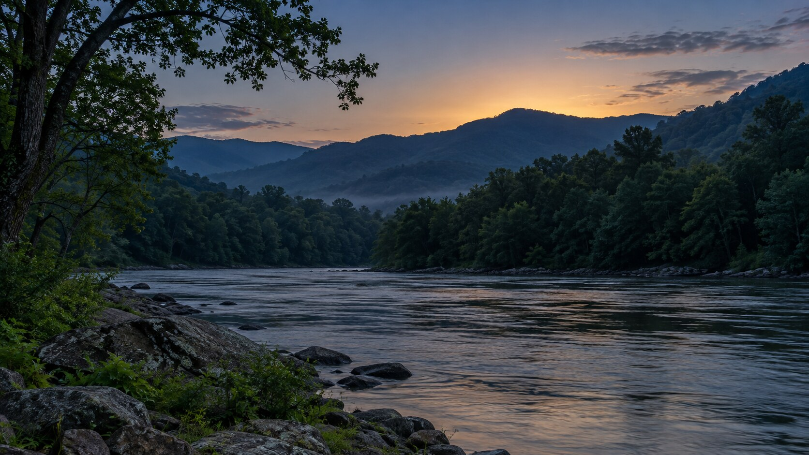
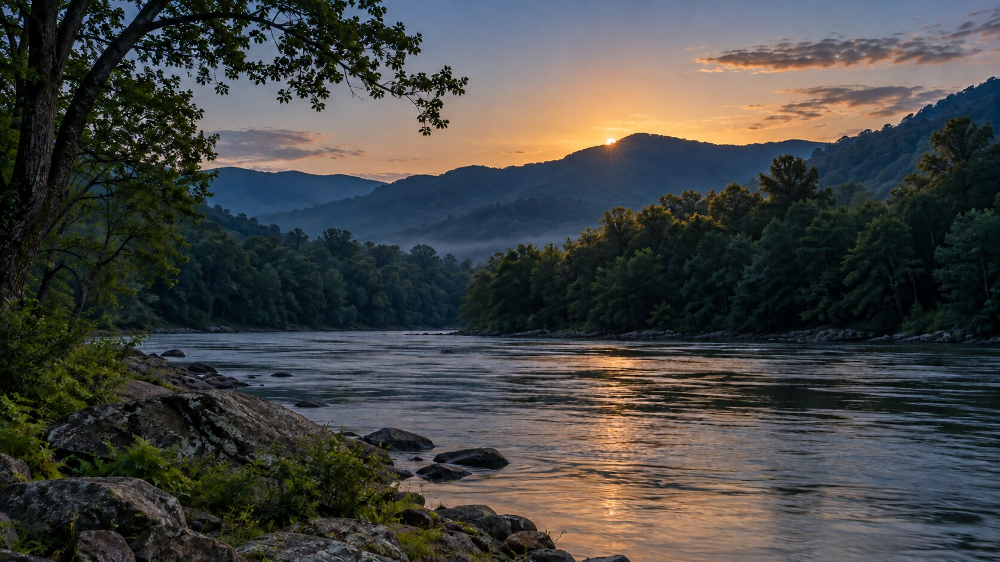
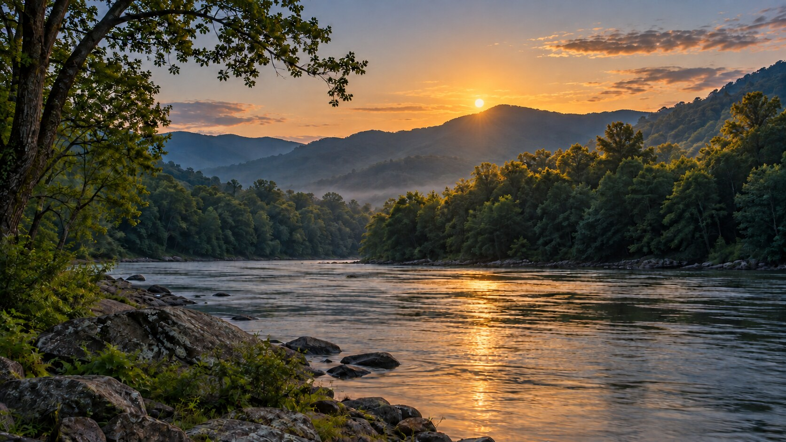
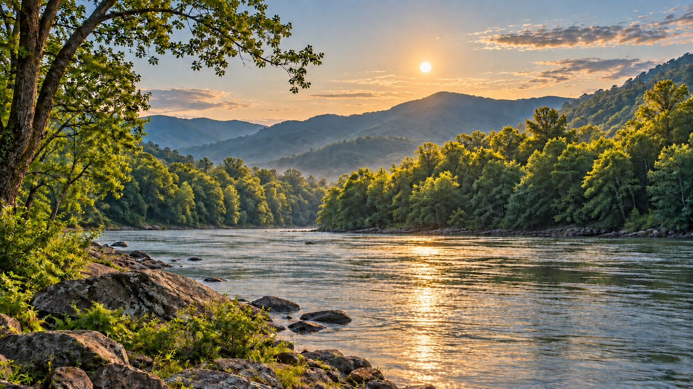

File Cabinet
Permanent WVLRP reference library for artwork, logos, page graphics, backgrounds and other images approved for use on the site.
Add Wildlife Photo
Choose one of your camera screenshots here. It will be saved through Hatch and automatically appear in Look Who's Here.
Saved Wildlife Photos
Permanent Hatch/File Cabinet sightings, newest first.
Loading wildlife photos…
East Bank Sunrise Sequence
Approved four-stage eastern sunrise set for the East Bank living wallpaper. Saved in chronological order so the scene can transition from predawn into early morning.

1. Before SunriseLight building behind the mountains; sun still below the ridge.
2. First CrestSun peeking over the ridge; first light reaching treetops and water.
3. Above the MountainsSun fully above the ridge with expanding morning illumination.
4. Early Morning SkySun higher in the sky with broad light across the forest and river.Approved Artwork
Image Library ReadyAdditional approved site images will be stored here so they stay easy to find and reuse.